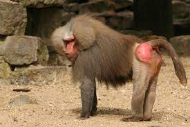

welcome to our fantastic webpage on Baboons. Here we will be talking about different species and more intersting facts.

Baboons are some of the world’s largest monkeys scattered across various habbitat in Africa and Arabia. They all have dog-like noses, powerful jaws, sharp canine teeth, and thick fur Males have a longer mane around the neck, called a ruff.

Baboons are one of the 7 remaining old world monkeys.
There are five species of the baboon — olive, yellow,
chacma, Guinea, and sacred.
Here is some more info about:

As a matter of fact, humans and baboons share as much as 91% identical DNA.

Made by Liv and Liany